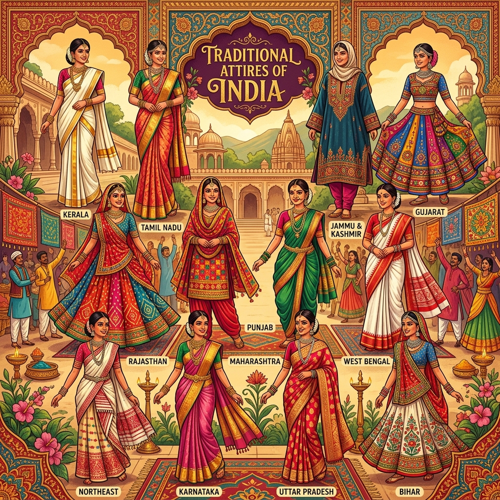

National Museum
New Delhi, Delhi
A major national collection spanning archaeology, sculpture, manuscripts, decorative arts, and material from ancient Indian civilizations.

Indian Museum
Kolkata, West Bengal
One of India's oldest museums, known for wide-ranging collections in archaeology, anthropology, geology, zoology, and art.

CSMVS
Mumbai, Maharashtra
A landmark museum with collections of sculpture, miniature paintings, decorative arts, archaeology, and natural history.
Salar Jung Museum
Hyderabad, Telangana
Known for a large collection of art objects, manuscripts, furniture, clocks, textiles, and decorative objects from India and abroad.

Visvesvaraya Museum
Bengaluru, Karnataka
An interactive science and technology museum with galleries related to engineering, space, biotechnology, engines, and everyday science.

Science City
Kolkata, West Bengal
A large science centre featuring interactive exhibitions, demonstrations, technology galleries, and educational attractions.

National Rail Museum
New Delhi, Delhi
A railway heritage museum featuring historic locomotives, coaches, signalling equipment, archival material, and outdoor exhibits.
Tribal Museum
Bhopal, Madhya Pradesh
An immersive museum interpreting the living traditions, art, architecture, rituals, and worldviews of tribal communities in Madhya Pradesh.
Government Museum
Chennai, Tamil Nadu
A historic multidisciplinary museum known for archaeology, South Indian bronzes, sculpture, numismatics, and natural history collections.
Government Museum & Art Gallery
Chandigarh
A major regional collection featuring Gandhara sculpture, Pahari and Rajasthani miniature paintings, and modern Indian art.
Partition Museum
Amritsar, Punjab
A people's museum documenting memories, objects, oral histories, migration, and personal experiences connected to the 1947 Partition.
Kala Bhoomi
Bhubaneswar, Odisha
A crafts museum presenting Odisha's handloom, tribal, terracotta, metal, wood, painting, and traditional craft practices.